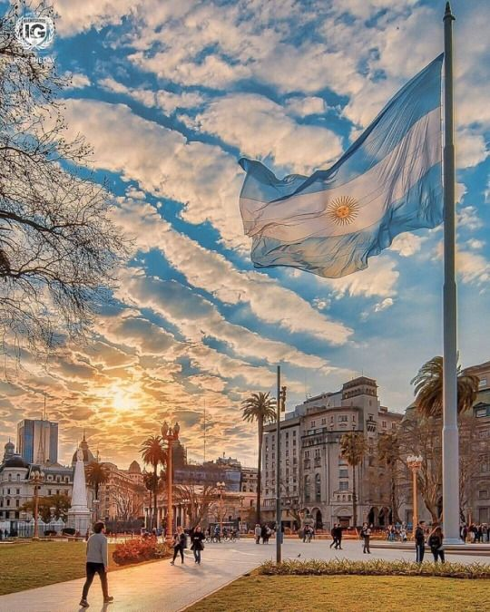
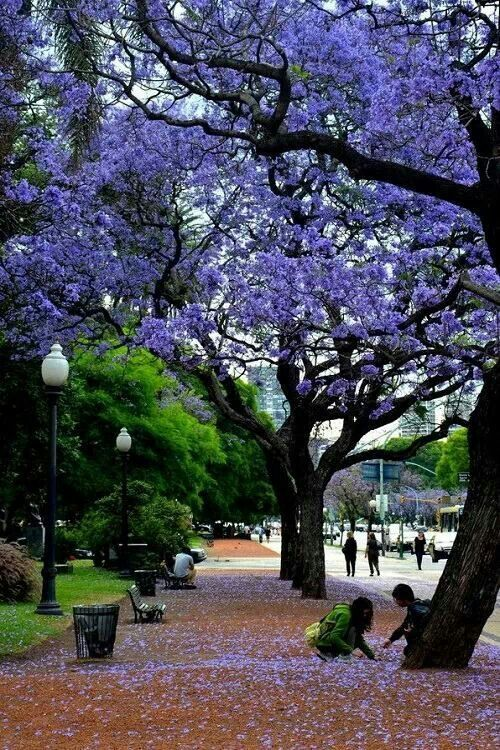

Buenos Aires
Bienvenue dans la capitale de l'Argentine, bienvenue à Buenos Aires. Ici, vous aurez de nombreuses choses à visiter : des quartiers,
des monuments, des points d'intérêt ou alors vous pouvez simplement vous balader dans la ville.
Voici une liste des choses les plus pertinentes à faire et à visiter afin de profiter au mieux de l'ambiance de la ville.

Vous pouvez commencer par visiter le quartier de Palermo, ici vous pourrez boire un verre, manger dans un des restaurants ou
encore juste visiter. C'est un quartier très attractif de jour comme de nuit, il donne envie d'être visité. Attention,
l'ambiance change complètement entre le jour et la nuit vous risqueriez d'être étonnés !!!!

Si vous souhaitez enrichir votre culture, le quartier de La Recoleta s'offre à vous. C'est l'un des quartiers les plus chics de la ville,
vous pouvez vous y promener sans soucis. C'est un concentré de culture et de parcs qui vous attend ici. Le cimetière de la Recoleta est
un endroit avec une architecture funéraire très belle et riche à voir. Si vous préferez voir un peu de verdure, vous pouvez vous balader
dans les environs de cette zone en passant par la Plaza Francia pour finir jusqu'à La Floralis Genérica.



Cette avenue est qualifiée de Broadway de l'Amérique du Sud. On peut y trouver une multitude de théâtres, c'est le lieu pour passer une
soirée en famille, entre amis. On y trouve beaucoup de restaurants italiens car 40% de la population est issue de l'immigration italienne.

Enfin, vous pouvez vous diriger vers le quartier historique de la ville de Buenos Aires : La boca. C'est également le premier port de la ville.
Ce quartier très coloré est bien loin du quartier de la Recoleta : c'est un quartier populaire et portuaire. C'est ici que ce sont installés les
immigrants italiens du XIXe siècle. Pour les fans de foot, vous pourrez également voir le stade mythique La Bombonera.